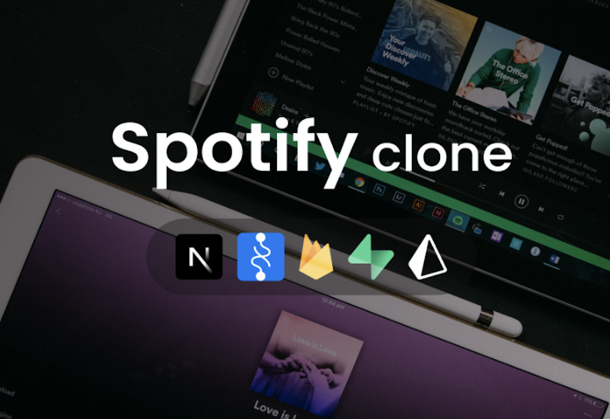

A personalized multilingual chatbot that uses NLP to interpret user data in a natural way
and implements machine learning to improve responses over time from past conversations.

Spotify Clone App
Developed a Spotify clone app that allows user to create their personal accounts and stream music
seamlessly. App also makes personal reccomendations to users based on personal preferences.
ISS Tracker
Used an API to track the active location(lattitude, longitude) of the ISS[International Space Station].
A web based application that displayes the ISS as a blob using gmaps API.
Password Management System
A password managing system that helps you store usernames on your server
and their corresponding passwords in a safe manner by encrypting them.